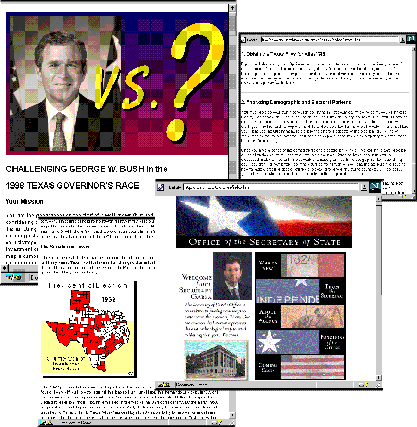

Figure 2. The "Texas Governor's Race" module in the Geographer's Craft Project. In this assignment, students develop a campaign strategy for a hypothetical candidate who is challenging the incumbent governor. This project is an introduction to demographic and electoral mapping, statistical generalization, classification, and symbolization.

Return to the Visitor's Information page.